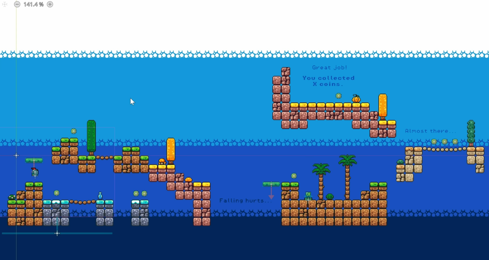
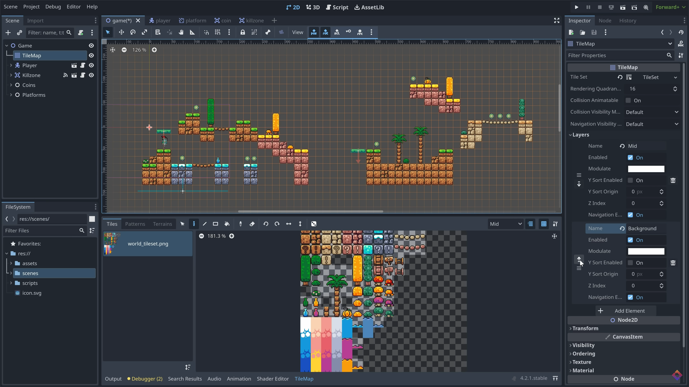
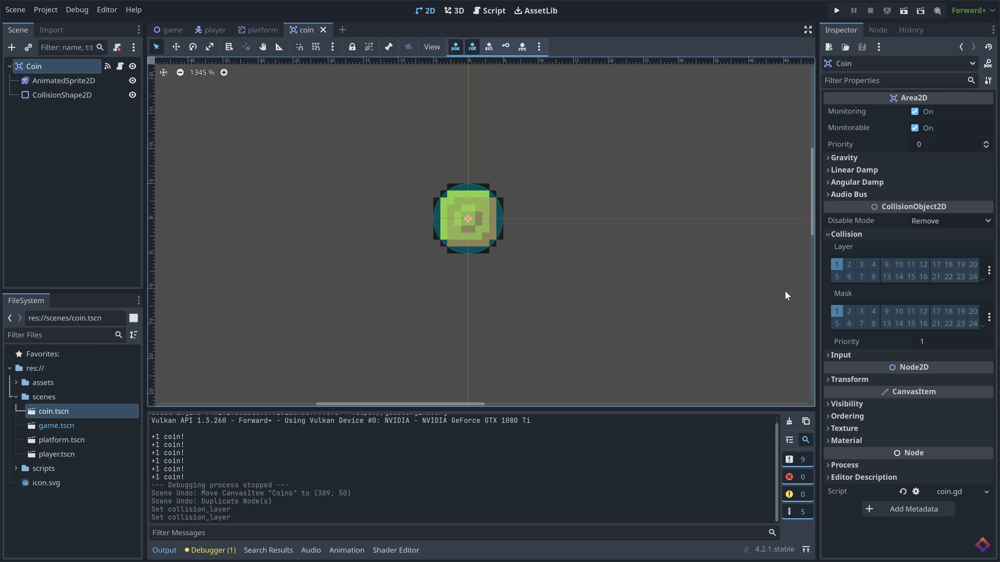
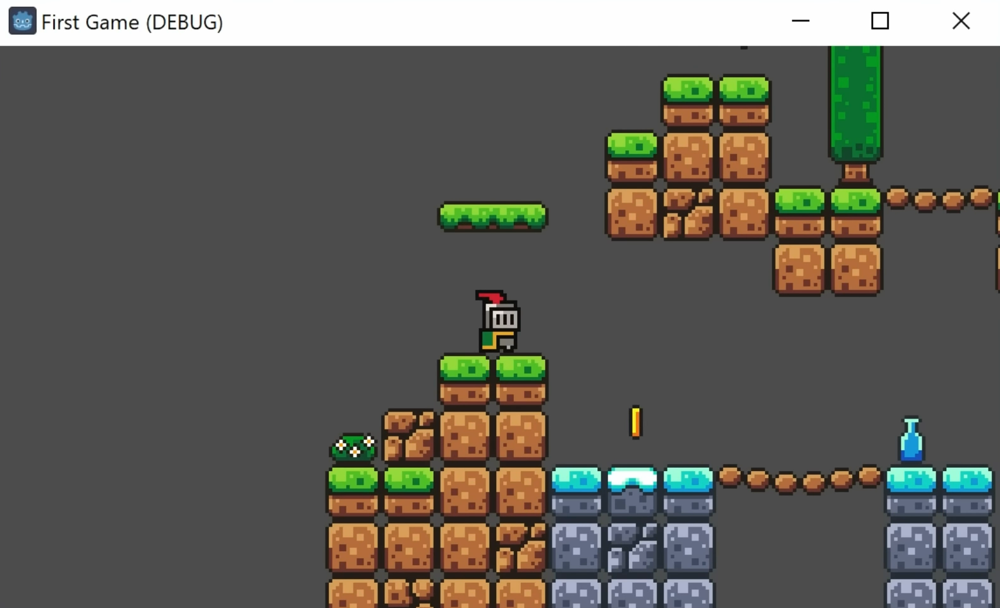
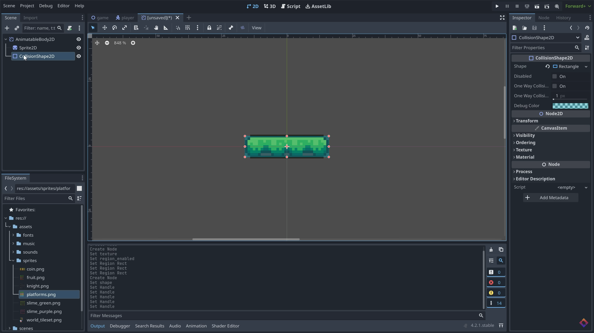
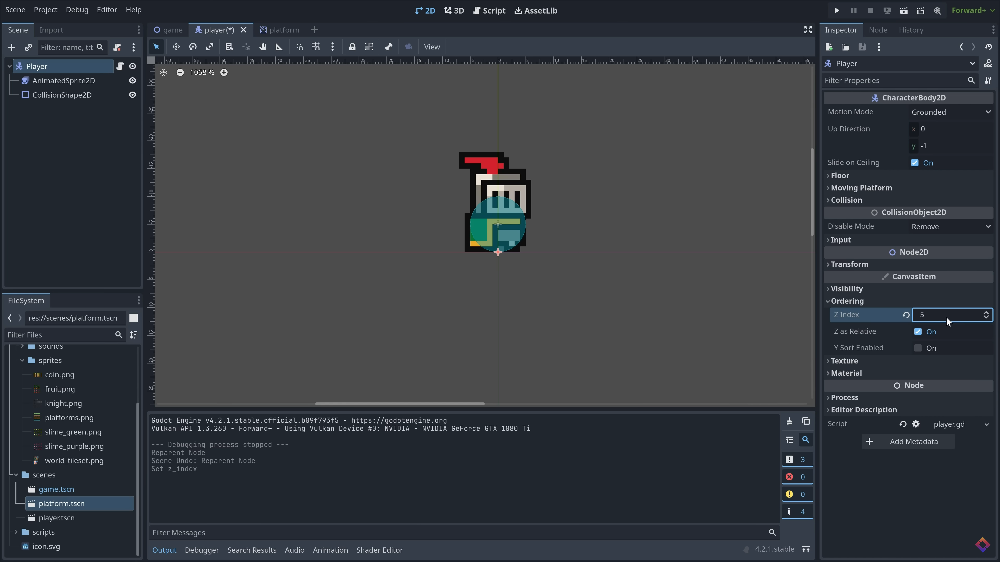

Home
Godot is a free and open-source game engine used for creating 2D and 3D games. It allows developers to build games across multiple platforms and provides a simple and extensible interface for game development.
In this tutorial, you will learn some basic skills you can use throughout Godot, including how to install the game engine, how to create a player character, how to create a tile set, and how to animate objects in the scene. After this is done, you will have everything you need to build a level of a Mario-style 2D platformer game.
Start by clicking "Installation & Setup" in the navigation bar above.
Showcase





